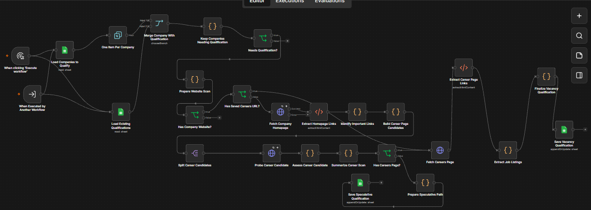

Workflow automation / Recent project
AI Job Discovery & Outreach Platform
A coordinated system for company discovery, contact research and evidence-grounded outreach, with a human in control of every send.
- n8n workflows
- 12
- dashboard views
- 5
Repository screenshot

- 01Discover
- 02Qualify
- 03Research
- 04Review & send
Inside the stack
8 technologiesImplementation / n8n
Twelve workflows coordinate discovery, qualification, contact research and outreach, with validated state changes and separate approval gates for sending.
12 connected workflows